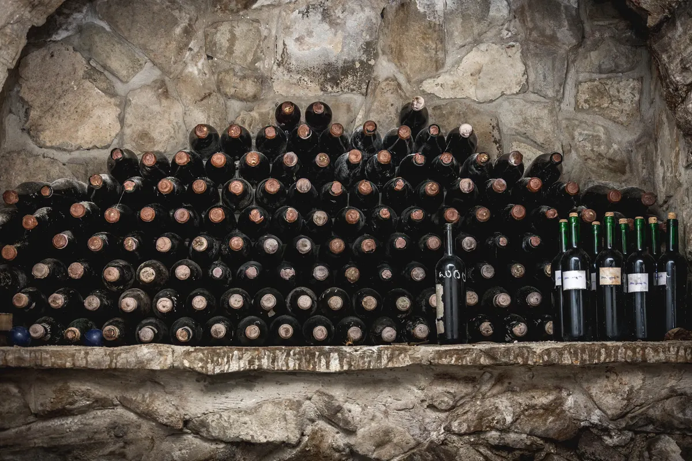
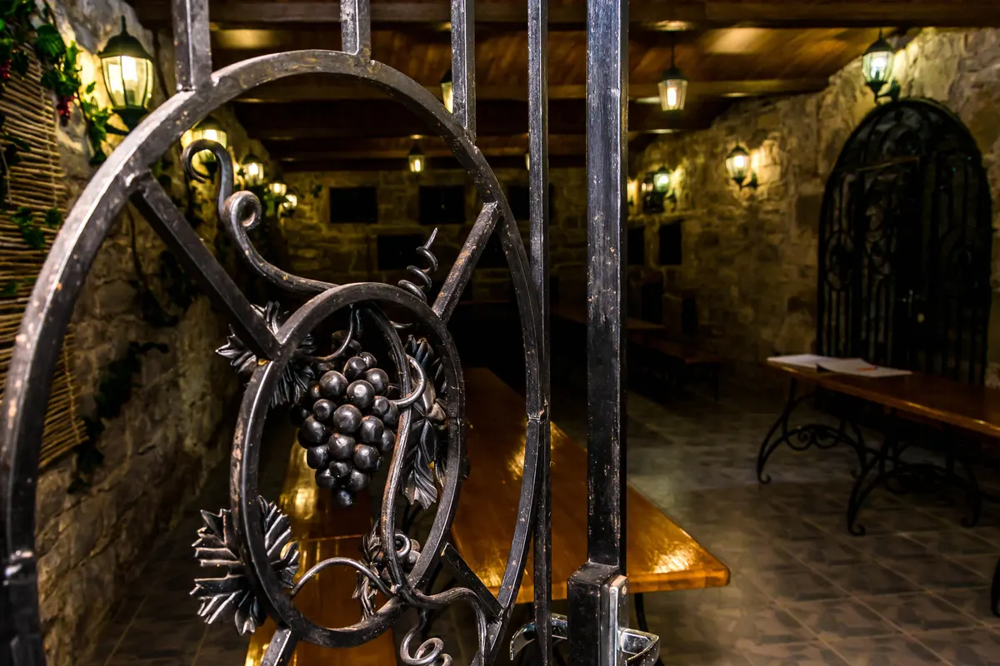

The Golitsyn Cellars of Arhaderesse · since 1888
Descendyourself
Long galleries of oak vats and barrels, where the house's reserve wines age.
Section I · The Cellar
The cellar is 138 years old.It still works.
Golitsyn dug no tunnels: deep ravines were chosen, their floors cleared, upper levels added on. Hence the name — "old cellars in the ravines."
- 1888
- Cellar No. 1L. S. Golitsyn builds the winery and the first cellar on Prince Gorchakov's "Arhaderesse" estate.
- 4
- Golitsyn cellarsNo. 1 — 1888, No. 2 — 1895, No. 3 — 1898, No. 4 — 1899. Still in use today.
- +14°C
- Year-roundThe air temperature in the cellars. In summer the contrast with the outdoors is noticeable — bring something warm.
- 200,000
- DecalitersAgeing capacity after the four cellars were built, in the late 19th century.

The Gate
Seven ways to descend: three cellars in the simplest program, four in the private one.
Section II · Programs
A ladder of tastings
Tour and tasting programs in effect since March 15, 2025. From an hour twenty in three cellars, to a private tasting by the collection with cheeses in the fireside hall.
- 01 A tour of the Golitsyn cellars and a tasting of 10 wine labels 3 Golitsyn cellars · 10 wine labels · tasting technique guidance Photos at historic sites tied to the names of Golitsyn and Gorchakov. 1 h 20 min from₽1,450per guest
- 02 A signature tour, 9 wine labels, and sparkling wine in the cellar 9 wine labels · a sparkling-wine tasting in the cellar · groups from 15 guests up to 2 hours from₽1,900per guest
- 03 A private tour with a tasting of 10 wine labels not in a group · 10 wine labels up to 2 hours from₽2,750per guest
- 04 A retro candlelit tasting in a historic Golitsyn cellar a historic cellar · by candlelight · by advance request up to 2 hours from₽2,750per guest
- 05 An evening tasting with a visit to the historic Golitsyn cellars the Golitsyn cellars · evening · by advance request up to 2 hours from₽2,750per guest
- 06 VIP tasting and tour 4 Golitsyn cellars · 2 premium labels by the collection · 10 labels and 6 artisan cheeses in the fireside hall A tour of four cellars with a tasting of two premium wine labels right in the collection cellar; followed by a food pairing in the fireside hall of the Tasting Complex. 2 hours from₽27,500for five guests
Prices and durations are from the price list in effect "as of 03/15/25." Five of the seven programs on the current site have no description at all — only a duration and a price: shown here exactly as it stands in the source. Price formats on the site are inconsistent ("From 1450 rubles," "from 2,750 rubles," "400 r. 1 piece") and have been brought to one format. Management reserves the right to change the timing, routes, and venue of tastings.
Section III · Getting There
The "Arhaderesse" Tasting Hall
A historic building: once a manor house, later a home for winemakers. This is where the descent into the cellars begins.
- Address
- Republic of Crimea, Sudak, Mindalnoye, 8A Mindalnaya St.
- Coordinates
- 44.858945, 35.04787 · 44°51′32.2″N, 35°2′52.33″E
- Tastings start
- 10:00 · 11:00 · 13:00 · 14:00 · 15:00 · 16:00 — daily
- Evening
- 20:00 — a candlelit tasting, by advance request
- Phone
- +7 (978) 956-33-22 · 10:00 to 17:00, no days off
- On site
- a flagship shop and wine bar · 10:00 to 20:00

- Warm clothing. The cellars sit around 14–16 °C — especially noticeable against the summer heat.
- Comfortable shoes. The descent into the cellars is on foot, and the tour is spent standing and walking.
- Age. Tastings are 18+ only; children under 12 must be accompanied by an adult.
Section IV · Booking
The cellar is always +14 °C.Even in February.
A tour of three Golitsyn cellars and a tasting of 10 wine labels — 1 hour 20 minutes, from ₽1,450 per guest. Candlelit and evening programs are by advance request.
10:00 to 17:00, no days off · Mindalnoye, 8A Mindalnaya St. — the "Arhaderesse" tasting hall